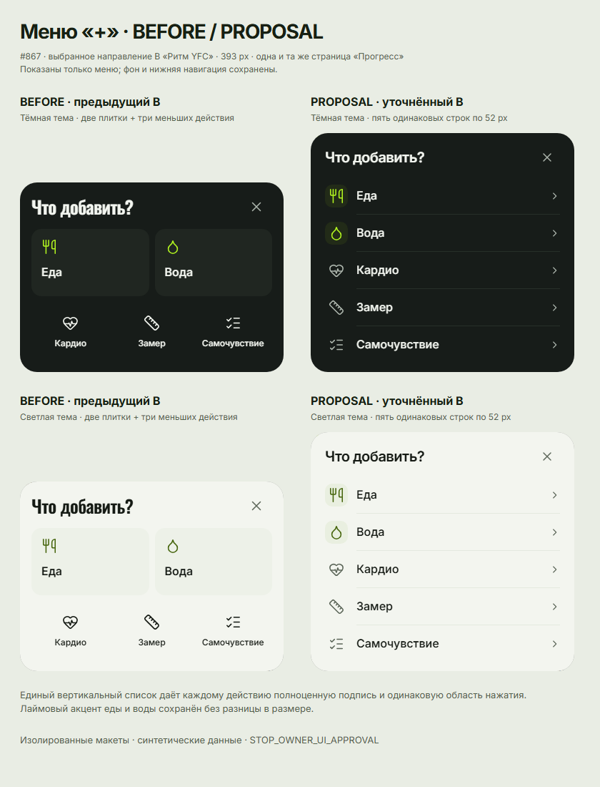

Ритм YFC · меню «+»
Еда · Вода · Кардио · Замер · Самочувствие
«+» открывает меню; крестик, фон и Escape закрывают. Tab остаётся внутри меню, после закрытия фокус возвращается на «+». При 400 px список прокручивается.
Your Fitness Coach · #867 · уточнение выбранного B
Компактный bottom sheet поверх «Прогресса». Одинаковые строки 52 px, небольшие иконки и спокойная кнопка закрытия. Еда и вода выделены только цветом иконки.
Предложение для визуального согласования. Синтетические данные, серверные операции отсутствуют. Остальное направление B сохранено; приложение и PR #907–#911 не меняются.
Еда · Вода · Кардио · Замер · Самочувствие
«+» открывает меню; крестик, фон и Escape закрывают. Tab остаётся внутри меню, после закрытия фокус возвращается на «+». При 400 px список прокручивается.
В предыдущем B две крупные плитки и три меньших действия задавали разный вес и размер выбора. Теперь все пять действий читаются сверху вниз и имеют одинаковую область нажатия. У вторичных действий полноценная подпись 16 px; меню воспринимается как единый список.
Открыть сравнительное изображение в полном размере
«Вода» сразу показывает гидратацию; остальные действия сохраняют свои назначения. В макете переходы демонстрационные. Жест закрытия не добавлен: в текущем QuickAddSheet такого поведения нет.
Сокращённая высота — имитация доступного viewport. Реальные VoiceOver, iOS-клавиатура и Telegram на устройстве не проверены. MERGE=false · DEPLOY=false · STOP_OWNER_UI_APPROVAL.